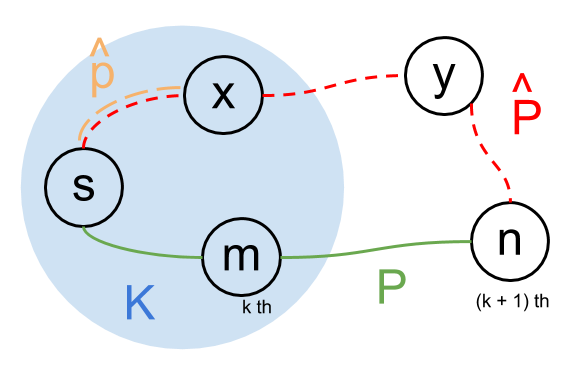

Sorting
To arrange items from minimal to maximal values(or maximal to minimal), given a disorder list \( L \).
For examples, given \( L = [ 5, 3, 1, 2, 4, 3, 8 ] \) and a sort function \( Sort \), the sorted list \( L_{sorted} \) is defined as:
\[ L_{sorted} = Sort(L) \]
The results of \( L_{sorted} \) should be: \[ L_{sorted} = [ 1, 2, 3, 3, 4, 5, 8 ] \] or \[ L_{sorted} = [ 8, 5, 4, 3, 3, 2, 1 ] \]
Selection sort
Idea
The concept is quite straight. If we could get the minimal value from list one by one, then we could re-arrange the list from minimal to maximal values.
Imagine we have two lists \(L\) and \(L_{sorted}\), the \(L\) is a list contains several items with comparable values and the \(L_{sorted}\) is a sorted list of \(L\). At first, \(L_{sorted} = [ ]\) is empty.
Take \(L = [ 5, 3, 1, 2, 3 ]\) as an example:
- At the first round, we get \(1\) as minimal value,
so we move it into \(L_{sorted}\). Now,
- \(L_{sorted} = [ 1 ]\)
- \(L = [ 5, 3, 2, 3 ]\)
- At the second round, we get \(2\) as minimal value, so
- \(L_{sorted} = [ 1, 2 ]\)
- \(L = [ 5, 3, 3 ]\)
- Next, \(3\) is picked and moved from \(L\) to \(L_{sorted}\), so
- \(L_{sorted} = [ 1, 2, 3 ]\)
- \(L = [ 5, 3 ]\)
- Then, the current minimal value \(3\) is moved from \(L\) to \(L_{sorted}\), so
- \(L_{sorted} = [ 1, 2, 3, 3 ]\)
- \(L = [ 5 ]\)
- Finally, \(5\) is moved into \(L_{sorted}\), so
- \(L_{sorted} = [ 1, 2, 3, 3, 5 ]\)
- \(L = [ ]\)
See! the idea is quite simple. In the same way, to sort the list from maximal to minimal values, the only different is to pick the maximal value from list each round instead of minimal value.
How to get minimal(or maximal) value
The way to get minimal(or maximal) items in \(L\) is to linearly search the whole list: \[ \begin{aligned} & Min(L): \newline & \space \space \space \space min = L[1] \newline & \space \space \space \space \text{for } i \leftarrow 1 \text{ to } N: \newline & \space \space \space \space \space \space \space \space \text{if } L[i] < min: \newline & \space \space \space \space \space \space \space \space \space \space \space \space min = L[i] \end{aligned} \] or \[ \begin{aligned} & Max(L): \newline & \space \space \space \space max = L[1] \newline & \space \space \space \space \text{for } i \leftarrow 1 \text{ to } N: \newline & \space \space \space \space \space \space \space \space \text{if } L[i] > max: \newline & \space \space \space \space \space \space \space \space \space \space \space \space max = L[i] \end{aligned} \] , where \(L[i]\) is the \(i\)th element in the list \(L\) and \(N\) is the length of \(L\).
Dividing one list into unsorted list and sorted list
In implementation, we usually divide the source list, which needs to be sorted, into two parts. One is sorted, the other is unsorted. This is better for memory usage than creating another list to put the sorted results.
That is, if we have a source list \(L = [ 5, 3, 1, 2, 3 ]\), it will be divided into \(L_{sorted}\) and \(L_{unsorted}\). They are initialized to \([]\) and \(L\) respectively, so \(L = L_{sorted} \cup L_{unsorted} = [ ] \cup [ 5, 3, 1, 2, 3 ]\).
- In the first round, \(1\) is picked and moved
from \(L_{unsorted}\) to \(L_{sorted}\), so
- \(L = L_{sorted} \cup L_{unsorted} = [ 1 ] \cup [ 5, 3, 2, 3 ] = [1 \vert 5, 3, 2, 3]\)
- In the second round, \(2\) is picked and moved
from \(L_{unsorted}\) to \(L_{sorted}\), so
- \(L = L_{sorted} \cup L_{unsorted} = [ 1, 2 ] \cup [ 5, 3, 3 ] = [1, 2 \vert 5, 3, 3]\)
- Next, \(3\) is picked, so
- \(L = L_{sorted} \cup L_{unsorted} = [ 1, 2, 3 ] \cup [ 5, 3 ] = [1, 2, 3 \vert 5, 3]\)
- Then, another \(3\) is picked, so
- \(L = L_{sorted} \cup L_{unsorted} = [ 1, 2, 3, 3 ] \cup [ 5 ] = [1, 2, 3, 3 \vert 5]\)
- Finally, \(5\) is picked, so
- \(L = L_{sorted} \cup L_{unsorted} = [ 1, 2, 3, 3, 5 ] \cup [ ] = [1, 2, 3, 3, 5]\)
Algorithm
\[ \begin{aligned} & SelectionSort(L): \newline & \space \space \space \space \text{for } i \leftarrow 1 \text{ to } \vert L \vert - 1: \newline & \space \space \space \space \space \space \space \space m \leftarrow i \newline & \space \space \space \space \space \space \space \space \text{for } j \leftarrow i + 1 \text{ to } \vert L \vert: \newline & \space \space \space \space \space \space \space \space \space \space \space \space \text{if } L[j] < L[m]: \newline & \space \space \space \space \space \space \space \space \space \space \space \space \space \space \space \space m \leftarrow j \newline & \space \space \space \space \space \space \space \space \text{swap } L[i] \text{ and } L[m] \end{aligned} \]
The above method will divide \(L\) into two parts.
- \(L[1...i-1] = L_{sorted}\) is sorted
- \(L[i...N] = L_{unsorted}\) is unsorted,
- where \(N = \vert L \vert\) is the length of \(L\)
The following are step by step explanation:
- When \(i = 1\)
- \(L_{sorted} = []\) and \(L_{unsorted} = L[1...N]\)
- we need to find the minimal element in list \(L[1...N]\)
- We use a value \(m\) to track the index of the minimal element
- where \(m\) is initialized to \(1\)
- \(m\) will be updated to \(j\), where \(2 \leq j \leq N\), if \(L[j] < L[m]\)
- Repeatedly above instruction from \(j = 2\) to \(N\)(searching whole \(L_{unsorted}\)), \(L[m]\) would be the minimal value in \(L[1...N]\)
- swap \(L[m]\) and \(L[i = 1]\)
- then \(L[1]\) now can be considered as \(L_{sorted}\)
- so \(L_{unsorted} = L[2...N]\)
- When \(i = 2\)
- \(L_{sorted} = L[1]\) and \(L_{unsorted} = L[2...N]\)
- we need to find the minimal element in list \(L[2...N]\)
- Same as above, \(m\) is used to keep tracking the index of the minimal element in \(L_{unsorted}\)
- where \(m\) is initialized to \(2\)
- After searching the whole \(L_{unsorted}\), \(L[m]\) would be the minimal value in \(L[2...N]\)
- We can put \(L[m]\) into the \(L_{sorted}\) by swapping the \(L[m]\) and \(L[i = 2]\)
- Thus, \(L_{sorted} = L[1...2]\) and \(L_{unsorted} = L[3...N]\)
- When \(i = k\)
- \(L_{sorted} = [1...k-1]\) and \(L_{unsorted} = L[k...N]\)
- \(m\) is initialized to \(k\)
- After searching the whole \(L_{unsorted}\), \(L[m]\) would be the minimal value in \(L[k...N]\)
- Swapping \(L[m]\) and \(L[i = k]\) would put \(L[m]\) into \(L_{sorted}\)
- Then, \(L_{sorted} = L[1...k]\) and \(L_{unsorted} = L[k+1...N]\)
- When \(i = N - 1\)(final round)
- \(L_{sorted} = [1...N-2]\) and \(L_{unsorted} = L[N-1...N]\)
- \(m\) is initialized to \(N-1\)
- Pick a smaller one between \(L[N-1]\) and \(L[N]\)
- and put it into the \(L_{sorted}\) like above(by swapping with \(L[m]\))
- Then \(L_{sorted} = [1...N-1]\) and \(L_{unsorted} = L[N]\)
- The left one(now is \(L[N]\)) is definitely the maximal item in \(L[1...N]\), so we don't need to do anything
Proof
Proof by contradiction
- Assume this method can not give us an ordered list
- so it exists one \(L[p] > L[q]\), where \(p < q\), in the result list \(L\)
- Before the result is computed, the unsorted list could be \(L[..p..q..]\) or \(L[..q..p..]\)
- It means that \(L[p]\) is picked before \(L[q]\) because \(p < q\) in the result list \(L\)
- It means \(L[p] < L[q]\) and it is contradictory to the assumption
- Thus, the assumption is wrong. This method will give us an ordered list.
Complexity
We need to search whole \(L_{unsorted}\) to find a minimal(or maximal) item. Suppose \(\vert L_{unsorted} \vert = N\) at first. (the length of \(L_{unsorted}\) is \(N\)).
At the first round, we need to search \(N\) items to find the minimal(or maximal) item and move it into \(L_{sorted}\). After then, \(\vert L_{unsorted} \vert = N - 1\).
At the second round, whole \(N - 1\) items in \(L_{unsorted}\) would be counted to find the minimal(or maximal) one. After the picked one is moved into \(L_{sorted}\), the size of \(L_{unsorted}\) is reduced to \(\vert L_{unsorted} \vert = N - 2\).
The procedure keep working until the list \(L_{unsorted}\) is empty (\(\vert L_{unsorted} \vert = 0\)). Thus, we need to search \[ \begin{aligned} N + (N - 1) + (N - 2) + .... + 1 &= \frac{ N \cdot (N + 1) }{ 2 } \newline &= \frac{ 1 }{ 2 } \cdot N^2 + \frac{ 1 }{ 2 } N \end{aligned} \] times to move all the items into \(L_{sorted}\). Thus, the complexity is \(\mathcal{O}(N^2)\), where the \(N\) is the length of the list \(L\).
Implementation
Insertion sort
Idea
The basic concept is similar to Selection Sort. Considering there are two lists. One is already sorted, and the other is unsorted, denoted \( L_{sorted} \) and \( L_{unsorted} \) respectively. The key idea is to pick the element from \( L_{unsorted} \) one by one and then insert them into the correct positions of \( L_{sorted} \). Suppose we have \( L_{sorted} = [3, 8, 34] \) and \( L_{unsorted} = [23, 2, 67, 34, 97] \):
- Step 1
- Pick \( 23 \) (which is the first element) from \( L_{unsorted} \), and insert it into \( L_{sorted} \)
- Find a position in \( L_{sorted} \) such that all elements before it is less than or equal to \( 23 \) and all elements after it is greater than \( 23 \)
- Start comparing it from the last(maximal) element to the first(minimal) one in \( L_{sorted} \) (Or you can do same thing from the first element to the last one)
- \( 34 \) is greater than \( 23 \), so we keep moving
- Next, we found that \( 8 \) is less than \( 23 \)
- A-ha! \( 23 \) should be inserted between \( 8 \) and \( 34 \)
- The \( L_{sorted} \) and \( L_{unsorted} \) are updated to \( [3, 8, 23, 34] \) and \( [2, 67, 34, 97] \) respectively.
- Step 2
- Pick the current first element of \( L_{unsorted} \), \( 2 \), and insert it into \( L_{sorted} \)
- Same as the previous step, we start comparing \( 2 \) from the maximal element of \( L_{sorted} \) to find the position to insert
- \( 34 \) is obviously larger than \( 2 \), so we should keep moving
- In this step, we can not find any element less than or equal to \( 2 \) after the all elements in \( L_{sorted} \) are checked
- Thus, the \( 2 \) is the minimal value among these elements
- We should put \( 2 \) as the first element in \( L_{sorted} \)
- The \( L_{sorted} \) and \( L_{unsorted} \) are updated to \( [2, 3, 8, 23, 34] \) and \( [67, 34, 97] \) respectively
- Step 3
- pick the current first element of \( L_{unsorted} \), \( 67 \), and then insert it into \( L_{sorted} \)
- Start comparing \( 67 \) with \( 34 \), we found \( 67 \) is greater
- It means that \( 67 \) is the maximal value among these elements
- Therefore, \( 67 \) should be inserted at the last position of \( L_{sorted} \)
- The \( L_{sorted} \) and \( L_{unsorted} \) are updated to \( [2, 3, 8, 23, 34, 67] \) and \( [34, 97] \) respectively
- Step 4
- \( 34 \) is picked to compare with the elements in \( L_{sorted} \).
- \( 67 \) is greater than \( 34 \), so go next
- \( 34 \) is equal to \( 34 \), so we stop here
- The picked \( 34 \) should be inserted between the existed \( 34 \) and \( 67 \)
- so the \( L_{sorted} \) and \( L_{unsorted} \) are updated to \( [2, 3, 8, 23, 34, 34, 67] \) and \( [97] \) respectively.
- Step 5
- \( 97 \) is picked to insert.
- \( 97 \) is greater than \( 67 \),
- so it should be put to the last position of \( L_{sorted} \)
- Finally, \( L_{unsorted} \) is empty and \( L_{sorted} = [2, 3, 8, 23, 34, 34, 67, 97] \).
How to find the inserted position
We can use the following method to find the first element whose value is less than or equal to the picked element: \[ \begin{aligned} & Position(L, x): \newline & \space \space \space \space i \leftarrow N \newline & \space \space \space \space \text{while } i > 0 \text{ and } L[i] > x: \newline & \space \space \space \space \space \space \space \space i \leftarrow i - 1 \newline & \space \space \space \space \text{return} \space i \end{aligned} \] ,where \( x \) is the element needs to be inserted, \( L[i] \) is the \( i \)th element in the sorted list \( L \), and \( N = \vert L \vert \) is the length of \( L \).
After getting the position \( p = Position(L, x) \) given the element \( x \), we need to insert \( x \) between \( L[p] \) and \( L[p+1] \). (If \( p = 0 \), then we insert \( x \) as the first element \( L[1] \). If \( p = N \), then we insert \( x \) as the last element \( L[p + 1] \).)
Dividing one list into unsorted list and sorted list
In implementation, we usually divide the source list \( L \) into two parts. One is sorted, the other is unsorted. They are denoted \( L_{sorted} \) and \( L_{unsorted} \) respectively. This is better for memory usage than creating another list to put the sorted results.
Suppose we have \( L = [73, 24, 37, 9, 97, 29] = L_{sorted} \cup L_{unsorted} \), where \( L_{sorted} \) and \( L_{unsorted} \) are initialized to \( [] \) and \( [73, 24, 37, 9, 97, 29] \).
- First round
- \( 73 \) is picked, but there is nothing could be compared
- so we just put it into \( L_{sorted} \)
- \( L_{sorted} = [73] \) and \( L_{unsorted} = [24, 37, 9, 97, 29] \)
- now \( L = L_{sorted} \cup L_{unsorted} = [73 \vert 24, 37, 9, 97, 29] \)
- Second round
- \( 24 \) is picked and \( p = Position(L_{sorted}, 24) = 0 \)
- so, we should insert \( 24 \) as the first element and update lists
- then \( L_{sorted} = [24, 73] \) and \( L_{unsorted} = [37, 9, 97, 29] \)
- now \( L = L_{sorted} \cup L_{unsorted} = [24, 73 \vert 37, 9, 97, 29] \)
- Third round
- \( 37 \) is picked and \( p = Position(L_{sorted}, 37) = 1 \)
- so we should insert \( 37 \) between \( L[p] = L[1] = 24 \) and \( L[p + 1] = L[2] = 73 \)
- then \( L_{sorted} = [24, 37, 73] \) and \( L_{unsorted} = [9, 97, 29] \)
- now \( L = L_{sorted} \cup L_{unsorted} = [24, 37, 73 \vert 9, 97, 29] \)
- Fourth round
- \( 9 \) is picked and \( p = Position(L_{sorted}, 9) = 0 \)
- Thus, \( L_{sorted}, L_{unsorted} \) are updated to \( [9, 24, 37, 73] \) and \( [97, 29] \).
- now \( L = L_{sorted} \cup L_{unsorted} = [9, 24, 37, 73 \vert 97, 29] \)
- Fifth round
- \( 97 \) is picked and \( p = Position(L_{sorted}, 97) = 4 = \vert L_{sorted} \vert \)
- so we should put \( 97 \) as the last element of the \( L_{sorted} \)
- then \( L_{sorted} = [9, 24, 37, 73, 97] \) and \( L_{unsorted} = [29] \)
- now \( L = L_{sorted} \cup L_{unsorted} = [9, 24, 37, 73, 97 \vert 29] \).
- Final round
- \( 29 \) is picked and \( p = Position(L_{sorted}, 29) = 2 \)
- so we should insert \( 29 \) between \( L[p] = L[2] = 24 \) and \( L[p + 1] = L[3] = 37 \)
- then \( L_{sorted} = [9, 24, 29, 37, 73, 97] \) and \( L_{unsorted} = [] \) is empty
- now \( L = L_{sorted} \cup L_{unsorted} = [9, 24, 29, 37, 73, 97] \).
Algorithm
\[ \begin{aligned} & InsertionSort(L): \newline & \space \space \space \space \text{for } i \leftarrow 2 \text{ to } \vert L \vert: \newline & \space \space \space \space \space \space \space \space j \leftarrow i \newline & \space \space \space \space \space \space \space \space \text{while } j > 1 \text{ and } L[j-1] > L[j]: \newline & \space \space \space \space \space \space \space \space \space \space \space \space \text{swap } L[j-1] \text{ and } L[j] \newline & \space \space \space \space \space \space \space \space \space \space \space \space j \leftarrow j - 1 \end{aligned} \]
The above method will divide \( L \) into two parts. \( L[1...i-1] = L_{sorted} \) is sorted, and \( L[i...N] = L_{unsorted} \) is unsorted, where \( N = \vert L \vert \) is the length of \( L \). The \( L[i] \) will be picked to insert into \( L_{sorted} \) iteratively.
- When \( i = 2 \)
- \( L_{sorted} = L[1] \) and \( L_{unsorted} = L[2...N] \)
- The goal in this round is to insert the \( L[2] \) into \( L_{sorted} \)
- The \( L[2] \) is picked and compare with \( L[1] \)
- If \( L[2] < L[1] \), then we swap them
- Otherwise, do nothing
- Then, \( L_{sorted} = L[1...2] \) is sorted and \( L_{unsorted} = L[3...N] \)
- When \( i = 3 \)
- \( L_{sorted} = L[1...2] \) and \( L_{unsorted} = L[3...N] \)
- The goal in this round is to insert the \( L[3] \) into \( L_{sorted} \)
- The \( L[3] \) is picked
- If \( L[3] >= L[2] \), it means that \( L[1...3] \) is sorted, so we don't need to do anything
- Otherwise(\( L[3] < L[2] \)), swap \( L[3] \) and \( L[2] \) and check whether it needs to swap again if \( L[2] < L[1] \)
- After finishing checking, \( L_{sorted} = L[1...3] \) is sorted and \( L_{unsorted} = L[4...N] \)
- When \( i = k \)
- \( L_{sorted} = L[1...k-1] \) and \( L_{unsorted} = L[k...N] \)
- The goal in this round is to insert the \( L[k] \) into \( L_{sorted} \)
- The \( L[k] \) is picked to compare with the elements one by one in \( L_{sorted} \), from the maximal(\( L[k-1] \)) to minimal item(\( L[1] \)), to find a place to insert
- After finishing checking, \( L_{sorted} = L[1...k] \) is sorted and \( L_{unsorted} \) is \( L[k+1...N] \)
- When \( i = N \)
- \( L_{sorted} = L[1...N-1] \) and \( L_{unsorted} = L[N] \)
- The goal in this round is to insert the \( L[N] \) into \( L_{sorted} \)
- In the same way, the \( L[1...N] \) is sorted after finishing the procedure
- so \( L_{sorted} \) is updated to \( L[1...N] \) and \( L_{unsorted} = [] \) is empty
Another method without swapping
\[ \begin{aligned} & InsertionSort(L): \newline & \space \space \space \space \text{for } i \leftarrow 2 \text{ to } \vert L \vert: \newline & \space \space \space \space \space \space \space \space c \leftarrow L[i] \newline & \space \space \space \space \space \space \space \space j \leftarrow i \newline & \space \space \space \space \space \space \space \space \text{while } j > 1 \text{ and } L[j-1] > c: \newline & \space \space \space \space \space \space \space \space \space \space \space \space L[j] = L[j-1] \newline & \space \space \space \space \space \space \space \space \space \space \space \space j = j - 1 \newline & \space \space \space \space \space \space \space \space L[j] = c \end{aligned} \]
Proof
Proof by mathematical induction
After each iteration for \( i \) in \( InsertionSort \), the \( L[1...i] \) is sorted array.
We need to prove this statement is true.
- when \( i = 2 \):
- Same as the above explanation
- The assumption is hold
- when \( i = k \):
- Assume the statement is hold when \( i = k \)
- \( L[1...k] \) is sorted array
- when \( i = k + 1 \)
- If \( L[k + 1] > L[k] \), then \( L[1...k + 1] \) is naturally sorted so the proof is done
- Otherwise, the \( L[k + 1] \) is swapped with \( L[k] \)
- Now \( L[1...k-1] \) is sorted and \( L[k + 1] > L[k] \)(after swapping!)
- Next, we apply this algorithm to \( L = L[1...k-1] \cup L[k] \) and now \( i = k \)
- The statement is hold when \( i = k \), so \( L[1...k] \) is sorted after applying the algorithm
- Now \( L[1...k] \) is sorted and \( L[k + 1] > L[k] \), so the proof is done
Complexity
The time complexity depends on the speed to find the inserted position. The more iterations to find the value of \( Position(L, x) \) need, the more time it takes. The worst case is that we need to go through whole \( L_{sorted} \) to find correct positions to insert. It happens when the list is arranged from maximal to minimal values(e.g.,\( [5, 4, 3, 2, 1] \)). In this case, if the length of list is \( N \), we need to search \[ \begin{aligned} 0 + 1 + 2 + ... + (N - 1) &= \frac{ N \cdot (N - 1) }{ 2 } \newline &= \frac{ 1 }{ 2 } \cdot N^2 - \frac{ 1 }{ 2 } N \end{aligned} \] times to move all the items into \( L_{sorted} \). Thus, the complexity is \( \mathcal{O}(N^2) \).
Implementation
Bubble sort
Idea
The basic concept is same to Selection Sort. The list is rearranged from minimal to maximal value by picking the maximal(or minimal) value from the unsorted list iteratively.
In selection sort, the minimal element is selected after searching whole list. On the other hand, bubble sort iteratively compares two neighbor elements and swaps the elements if the left element is greater(or less) than the right one, from the list head to the list tail. Therefore, the maximal, the second-maximal, ... values will be "bubbled" up to the tail of list one by one.
Take L = \([ 5, 3, 4, 2, 1 ]\) as an example:
- Step 1: Move the maximal value to the last position of the list.
- \(5 > 3\) so swap them. \(L = [ 3, 5, 4, 2, 1 ]\)
- \(5 > 4\) so swap them. \(L = [ 3, 4, 5, 2, 1 ]\)
- \(5 > 2\) so swap them. \(L = [ 3, 4, 2, 5, 1 ]\)
- \(5 > 1\) so swap them. \(L = [ 3, 4, 2, 1, 5 ]\)
- The maximal value \(5\) is moved to the last of the list
- Step 2: Move the second-maximal value to the second-last position of the list.
- \(3 < 4\) so do nothing.
- \(4 > 2\) so swap them. \(L = [ 3, 2, 4, 1, 5 ]\)
- \(4 > 1\) so swap them. \(L = [ 3, 2, 1, 4, 5 ]\)
- The second-maximal value \(4\) is moved to the second-last of the list
- Step 3: Move the third-maximal value to the third-last position of the list.
- \(3 > 2\) so swap them. \(L = [ 2, 3, 1, 4, 5 ]\)
- \(3 > 1\) so swap them. \(L = [ 2, 1, 3, 4, 5 ]\)
- The third-maximal value \(3\) is moved to the third-last of the list
- Step 4: Move the fourth-maximal value to the fourth-last position of the list.
- \(2 > 1\) so swap them. \(L = [ 1, 2, 3, 4, 5 ]\)
- The fourth-maximal value \(2\) is moved to the fourth-last of the list
Dividing one list into unsorted list and sorted list
In above example, the list is naturally partition into the sorted part and the unsorted part. The part contains the "bubbled" elements are sorted. The others are unsorted.
- Step 1: Move the maximal value to the last position of the list.
- This iteration ends after the comparison of last two elements(4th and 5th)
- The maximal value \(5\) is "bubbled" to the last(5th) of the list
- \(L = [ 3, 2, 4, 1, | 5 ]\)
- The 5th element is sorted part and the 1st-to-4th is unsorted part
- Step 2: Move the second-maximal value to the second-last position of the list.
- This iteration ends after the comparison of second-last two elements(3rd and 4th)
- The second-maximal value \(4\) is "bubbled" to the second-last(4th) of the list
- \(L = [ 3, 2, 1, | 4, 5 ]\)
- The 4th-to-5th elements is sorted part and the 1st-to-3rd is unsorted part
- Step 3: Move the third-maximal value to the third-last position of the list.
- This iteration ends after the comparison of third-last two elements(2nd and 3rd)
- The third-maximal value \(3\) is "bubbled" to the third-last(3rd) of the list
- \(L = [ 2, 1, | 3, 4, 5 ]\)
- The 3rd-to-5th elements is sorted part and the 1st-to-2nd is unsorted part
- Step 4: Move the fourth-maximal value to the fourth-last position of the list.
- This iteration ends after the comparison of fourth-last two elements(1st and 2nd)
- The fourth-maximal value \(2\) is "bubbled" to the fourth-last(2nd) of the list
- \(L = [ 1, | 2, 3, 4, 5 ]\)
- The 2nd-to-5th elements is sorted part and the 1st is unsorted part
- The last left element is definitely the smallest value
- so whole list from 1st to 5th is sorted
Algorithm
\[ \begin{aligned} & BubbleSort(L): \newline & \space \space \space \space \text{for } i \leftarrow 1 \text{ to } \vert L \vert - 1: \newline & \space \space \space \space \space \space \space \space \text{for } j \leftarrow 1 \text{ to } \vert L \vert - i: \newline & \space \space \space \space \space \space \space \space \space \space \space \space \text{if } L[j] > L[j+1]: \newline & \space \space \space \space \space \space \space \space \space \space \space \space \space \space \space \space \text{swap } L[j] \text{ and } L[j+1] \newline \end{aligned} \]
- At the 1st round, the 1st-last element is sorted
- At the 2nd round, the 2nd-last to 1st-last elements are sorted
- At the 3rd round, the 3rd-last to 1st-last elements are sorted
- At the \(k\) round, the \(k\)-last to 1st-last elements are sorted
Proof
Proof by mathematical induction
Lemma 1
\[ \begin{aligned} & \text{for } j \leftarrow 1 \text{ to } \vert L \vert - 1: \newline & \space \space \space \space \text{if } L[j] > L[j+1]: \newline & \space \space \space \space \space \space \space \space \text{swap } L[j] \text{ and } L[j+1] \newline \end{aligned} \]
Given a list \(L\) with \(N\) elements, where \(N = \vert L \vert > 0\), the maximal element of \(L\) will be \(L[N]\)(the last element).
- Base step: When \(N = 1\), the assumption obviously holds
- Induction Hypothesis: Assume the hypothesis holds when \(N = k(j \leftarrow 1 \text{ to } k-1)\)
- Induction Step: when \(N = k + 1\)
- After the iteration of \(j = k - 1\), the list is divided into two parts: \(L[1...k]\) and \(L[k+1]\)
- From above hypothesis, the maximal value in \(L[1...k]\) is \(L[k]\)
- When \(j = k\):
- if \(L[k] \leq L[k+1]\), then the maximal element is \(L[k+1]\), so the hypothesis still holds
- if \(L[k] > L[k+1]\), they will be swapped. After then, the maximal element will be \(L[k+1]\), so the hypothesis still holds
Lemma 2
\[ \begin{aligned} & \text{for } i \leftarrow 1 \text{ to } \vert L \vert - 1: \newline & \space \space \space \space \text{for } j \leftarrow 1 \text{ to } \vert L \vert - i: \newline & \space \space \space \space \space \space \space \space \text{if } L[j] > L[j+1]: \newline & \space \space \space \space \space \space \space \space \space \space \space \space \text{swap } L[j] and L[j+1] \newline \end{aligned} \]
After the \(i\) iteration, \(L[N - i + 1]\) will be the \(i\)th largest element of \(L[1...N]\)
- Base step: When \(i = 1\), the assumption holds because lemma 1 is true
- Induction Hypothesis: Assume hypothesis holds when \(i = k\)
- Induction Step: When \(i = k + 1\)
- The goal is to prove that the \(L[N - k]\) is the \((k + 1)\)th largest element of \(L[1...N]\)
- After the iteration \(i = k\), \(L[N-k+1]\) is the \(k\)th largest element of \(L[1...N]\)
- We can divide the list into \(L[1...N-k]\) and \(L[N-k+1...N]\)
- The list \(L[N-k+1...N]\) contains the picked \(k\)th, \((k-1)\)th, .... , \(1\)st largest elements
- The list \(L[1...N-k]\) is the unselected and unsorted list
- By applying the lemma 1 to \(L[1...N-k]\), the maximal element of \(L[1...N-k]\) will be \(L[N-k]\) after all the iterations for \(1 \leq j \leq N - k\).
- \(L[N-k]\) is the \((k+1)\)th selected maximal element
- so \(L[N - (k+1) + 1] = L[N-k]\) is the \((k+1)\)th largest element of \(L[1...N]\)
Conclusion
By lemma 2
- After \(i = 1\), \(L[N]\) is the \(1\)st largest element of \(L[1...N]\)
- After \(i = 2\), \(L[N - 1]\) is the \(2\)nd largest element of \(L[1...N]\)
- After \(i = 3\), \(L[N - 2]\) is the \(3\)rd largest element of \(L[1...N]\)
- ...
- After \(i = k\), \(L[N - k + 1]\) is the \(k\)th largest element of \(L[1...N]\)
- After \(i = k+1\), \(L[N - k]\) is the \((k+1)\)th largest element of \(L[1...N]\)
- ...
- After \(i = N-2\), \(L[3]\) is the \(N-2\)th largest element of \(L[1...N]\)
- After \(i = N-1\), \(L[2]\) is the \(N-1\)th largest element of \(L[1...N]\)
- After \(i = N\), \(L[1]\) is the \(N\)th largest element of \(L[1...N]\)
Thus, the list $L[1...N]$ is sorted by the order that \(L[1] \leq L[2] \leq L[3] \leq ... \leq L[N-1] \leq L[N]\).
Complexity
Let \(N = \vert L \vert\) denote the length of list \(L\).
| \(i\) | iterations for \(j\) |
|---|---|
| \(1\) | \(j \in [1, N-1]\) |
| \(2\) | \(j \in [1, N-2]\) |
| ... | ... |
| \(N-2\) | \(j \in [1, 2]\) |
| \(N-1\) | \(j = 1\) |
The total of all iterations of BubbleSort(\(L\)) is tracked in above table and its sum is:
\[ \begin{aligned} (N - 1) + (N - 2) + ... + 2 + 1 &= \frac{ N \cdot (N - 1) }{ 2 } \newline &= \frac{ 1 }{ 2 } \cdot N^2 - \frac{ 1 }{ 2 } N \end{aligned} \]
Thus, the complexity is \(\mathcal{O}(N^2)\).
Implementation
Merge sort
Idea
Merge sort is an efficient algorithm that applies the concepts of divide and conquer to sort the list.
The key idea of divide and conquer is to recursively break down the problems into two or more sub-problems and they are same or related to the original problem, until these divided sub-problems are simple enough to solve directly. Then, the solutions of the original problem can be combined and derived by the solutions of all the sub-problems.
Divide and conquer
The calculation of Fibonacci number, \( F(n) = F(n-1) + F(n-2) \), is one example. To calculate \( F(n) \), it needs to find \( F(n-1) \) and \( F(n-2) \). Similarly, to calculate \( F(n-1) \), it needs to \( F(n-2) \) and \( F(n-3) \). The sub-problems for calculating \( F(n-1) \) and \( F(n-2) \) have same form as the one for \( F(n) \).
Recursively, we will need to get \( F(n-1) \), \( F(n-2) \), ..., \( F(2) \), \( F(1) \) and \( F(1) \) and \( F(2) \) are easy enough to solve directly. They are both \( 1 \). Thus, \( F(3) = F(2) + F(1) = 2 \), \( F(4) = F(3) + F(2) = 3 \), ... and then \( F(n) \) can be computed.
Dividing the sorting-problem
Let's apply this concept to the sorting problem. If we want to sort the list \( L = [6, 3, 7, 1, 9, 2, 5] \), the sub-lists \( [6, 3, 7, 1], [9, 2, 5] \) must also be sorted, so we can narrow down our problem scope for handling the sub-lists. Next, \( [6, 3, 7, 1] \) can be divided to \( [6, 3], [7, 1] \) and \( [6, 3] \) also can be split into \( [6] \) and \( [3] \). Finally, \( [6], [3] \) are not dividable so we stop breaking down the list.
[6, 3, 7, 1, 9, 2, 5]
/ \
[6, 3, 7, 1] [9, 2, 5]
/ \ / \
[6, 3] [7, 1] [9, 2] [5]
/ \ / \ / \
[6] [3] [7] [1] [9] [2]
In the same way, the whole list can be divided into \( [6], [3], [7], [1], [9], [2], [5] \).
Conquering the sub-problems
After there is only one element left, the subproblem is solved by nature since it's already sorted.
However, the problem becomes
how do we combine these sorted chunks into a sorted list
We need a method that can merge two sorted lists, \( L_1[1...X] \) and \( L_2[1...Y] \), where \( X, Y \geq 1 \), into a bigger sorted list \( L[1...(X+Y)] \).
Combining all the results of sub-sorting-problem
Suppose we have two sorted lists \( A = [3, 6, 10, 23] \) and \( B = [2, 7, 50, 55] \). We provide two ways to merge them into a sorted list.
Picking the smallest elements one by one
The simplest method is to pick the smallest elements iteratively by searching both lists from the minimal to maximal.
We only need to compare the left most elements of both lists and pick the smaller one since \( A \) and \( B \) are already sorted.
The following example demonstrate the process of this idea:
() <- search index A = [(3), 6, 10, 23] B = [(2), 7, 50, 55] L = [] // <- 2
In the first round, \( 2 \) is picked since \( 2 < 3 \) and going to be put into another list \( L \).
// You can think the left most element
// is shifted one by one
A = [(3), 6, 10, 23] // [3, 6, 10, 23]
B = [2, (7), 50, 55] // [7, 50, 55]
L = [2] // <- 3
After \( 2 \) is picked, we move the index of \( B \) from \( 2 \) to \( 7 \). Next, \( 3 \) is picked since \( 3 < 7 \) and going to be put into \( L \).
A = [3, (6), 10, 23] // [6, 10, 23] B = [2, (7), 50, 55] // [7, 50, 55] L = [2, 3] // <- 6
After \( 3 \) is picked, we move the index of \( A \) from \( 3 \) to \( 6 \). Next, \( 6 \) is picked since \( 6 < 7 \) and going to be put into \( L \).
A = [3, 6, (10), 23] // [10, 23] B = [2, (7), 50, 55] // [7, 50, 55] L = [2, 3, 6] // <- 7
After \( 6 \) is picked, we move the index of \( A \) from \( 6 \) to \( 10 \). Next, \( 7 \) is picked since \( 7 < 10 \) and going to be put into \( L \).
A = [3, 6, (10), 23] // [10, 23] B = [2, 7, (50), 55] // [50, 55] L = [2, 3, 6, 7] // <- 10
After \( 7 \) is picked, we move the index of \( B \) from \( 7 \) to \( 50 \). Next, \( 10 \) is picked since \( 10 < 50 \) and going to be put into \( L \).
A = [3, 6, 10, (23)] // [23] B = [2, 7, (50), 55] // [50, 55] L = [2, 3, 6, 7, 10]
After \( 10 \) is picked, we move the index of \( A \) from \( 10 \) to \( 23 \). Next, \( 23 \) is picked since \( 23 < 50 \) and going to be put into \( L \).
A = [3, 6, 10, 23] // [] B = [2, 7, (50), 55] // [50, 55] L = [2, 3, 6, 7, 10, 23]
After \( 23 \) is picked, there is no need to compare again since the \( 23 \) is the last element in \( A \).
A = [3, 6, 10, 23] // [] B = [2, 7, 50, 55] // [] L = [2, 3, 6, 7, 10, 23, 50, 55]
Next, we can append all the rest elements from \( 50 \) to the end of \( B \) into the \( L \). Finally, we get a sort list \( L \).
Swapping the elements one by one
Another idea to merge the two sorted lists \( A = [3, 6, 10, 23] \) and \( B = [2, 7, 50, 55] \), is to couple them together into a list \( L = A \cup B \)
() <- element who will be moved L = [3, 6, 10, 23, | (2), 7, 50, 55] // The '|' doesn't exist! It's only a notation for better explanation.
and then move the minimal element of the later list(\( B \)) to the right position of the former list(\( A \)).
The way for finding right the position is to compare the elements one by one from the end of the former list(\( A \)) to its head.
() <- element who will be moved L = [3, 6, 10, (2), 23, | 7, 50, 55]
In our example, the \( 2 \) is swapped with \( 23 \) since \( 2 < 23 \). Then we keep comparing \( 2 \) with \( 10 \).
() <- element who will be moved L = [3, 6, (2), 10, 23, | 7, 50, 55]
Similarly, the \( 2, 10 \) are swapped since \( 2 < 10 \).
() <- element who will be moved L = [3, (2), 6, 10, 23, | 7, 50, 55]
Next, the \( 2, 6 \) are swapped since \( 2 < 6 \).
() <- element who will be moved L = [(2), 3, 6, 10, 23, | 7, 50, 55]
Next, the \( 2, 3 \) are swapped since \( 2 < 3 \). After this round, there is nothing to compare, so the \( 2 \) is moved to its right position. Now \( A = [2, 3, 6, 10, 23] \) and \( B = [7, 50, 55] \)
In the same way, we can do this process again with \( 7 \). It's the minimal element of the later list \( B \) now.
() <- element who will be moved L = [2, 3, 6, 10, 23, | (7), 50, 55] L = [2, 3, 6, 10, (7), 23, | 50, 55] L = [2, 3, 6, (7), 10, 23, | 50, 55] L = [2, 3, 6, 7, 10, 23, | 50, 55]
After this round, \( A = [2, 3, 6, 7, 10, 23] \) and \( B = [50, 55] \).
Then do it again with with \( 50 \).
() <- element who will be moved L = [2, 3, 6, 7, 10, 23, | (50), 55] L = [2, 3, 6, 7, 10, 23, 50, | 55]
However, \( 50 \) doesn't move because \( 23 < 50 \). We just need to append \( 50 \) to the end of the former list \( A \). After this round, \( A = [2, 3, 6, 7, 10, 23, 50] \) and \( B = [55] \).
() <- element who will be moved L = [2, 3, 6, 7, 10, 23, 50, | (55)] L = [2, 3, 6, 7, 10, 23, 50, 55]
It's same to \( 55 \). It doesn't need to be moved since \( 50 < 55 \), so just append it to the \( A \). Finally, \( A = [2, 3, 6, 7, 10, 23, 50, 55] \) and \( B = [] \) is empty now. Now we have a sorted list \( L = A \cup B = A \)!
Which merge method is better
The first method use extra space to store the sorted results, rather than the second in-place solution. On the other hand, the second method needs more swapping executions and its a linear operation. For better performance, we take the first method as our approach here.
Actually, there is a way to save the extra space and it works as fast as the first method above. However, it's complicated. I will write another post for illustrating it. Please refer In-place merge sort in Elementary Algorithms to read it.
Algorithm
\[ \begin{aligned} & MergeSort(L): \newline & \space \space \space \space mergeSort(L, 1, \vert L \vert) \end{aligned} \]
\[ \begin{aligned} & mergeSort(L, l, r): \newline & \space \space \space \space \text{if } l < r: \newline & \space \space \space \space \space \space \space \space m \leftarrow \lfloor \frac{l+r}{2} \rfloor \newline & \space \space \space \space \space \space \space \space mergeSort(L, l, m) \newline & \space \space \space \space \space \space \space \space mergeSort(L, m+1, r) \newline & \space \space \space \space \space \space \space \space merge(L, l, m, r) \end{aligned} \]
\[ \begin{aligned} & merge(L, l, m, r): \newline & \space \space \space \space L^\prime \leftarrow [] \newline & \space \space \space \space i \leftarrow l, j \leftarrow m+1, k \leftarrow l \newline & \space \space \space \space \text{while } i \leq m \text{ and } j \leq r: \newline & \space \space \space \space \space \space \space \space \text{if } L[i] < L[j]: \newline & \space \space \space \space \space \space \space \space \space \space \space \space L^\prime[k] \leftarrow L[i] \newline & \space \space \space \space \space \space \space \space \space \space \space \space i \leftarrow i + 1 \newline & \space \space \space \space \space \space \space \space \text{else}: \newline & \space \space \space \space \space \space \space \space \space \space \space \space L^\prime[k] \leftarrow L[j] \newline & \space \space \space \space \space \space \space \space \space \space \space \space j \leftarrow j + 1 \newline & \space \space \space \space \space \space \space \space k \leftarrow k + 1 \newline & \space \space \space \space \text{while } i \leq m: \newline & \space \space \space \space \space \space \space \space L^\prime[k] \leftarrow L[i] \newline & \space \space \space \space \space \space \space \space i \leftarrow i + 1 \newline & \space \space \space \space \space \space \space \space k \leftarrow k + 1 \newline & \space \space \space \space \text{while } j \leq r: \newline & \space \space \space \space \space \space \space \space L^\prime[k] \leftarrow L[j] \newline & \space \space \space \space \space \space \space \space j \leftarrow j + 1 \newline & \space \space \space \space \space \space \space \space k \leftarrow k + 1 \newline & \space \space \space \space \text{for } i \leftarrow l \text{ to } r: \newline & \space \space \space \space \space \space \space \space L[i] \leftarrow L^\prime[i] \end{aligned} \]
Proof
Correctness of Merge
List L
<------ sorted ------> <------ sorted ------->
<- merged -> <--- A ---> <- merged -> <--- B --->
-----+---+--------+---+-----+---+-----+------+---+-----+---+-----
... | l | ...... | i | ... | m | m+1 | .... | j | ... | r | ...
-----+---+--------+---+-----+---+-----+------+---+-----+---+-----
^ ^
head of sublist A head of sublist B
List L'
<-- merged --> <--- empty --->
+---+-------+-----+---+-------+-------+
| 1 | ... | k-1 | k | ..... | r-l+1 |
+---+-------+-----+---+-------+-------+
^
head of empty area of list L'
L[l...m] : the sorted sublists for merging with L[m+1...r]
L[m+1...r] : the sorted sublists for merging with L[l...m]
A, B : the sublists containing elements that have NOT been merged yet
L'[1...k-1] : the merged list from L[l...i-1] and L[m+1...j-1]
i: The index of the first element in L[l...m] that has NOT been merged yet
j: The index of the first element in L[m+1...r] that has NOT been merged yet
k: The index of next merged element copied from L[i] or L[j]
Loop Invariant: At the beginning of the while-loop, the following conditions hold:
- Sublists \( L[i...m] \) and \( L[j...r] \) are sorted
- \( L^\prime \) holds the elements from sublists \( L[l...i-1] \) and \( L[m+1...j-1] \)
- All elements in \( L^\prime[1...k-1] \) is less or equal than sublists \( L[i...m] \) and \( L[j...r] \)
- \( L^\prime \) are sorted. Formally, \( \forall i \in [l + 1, r], L^\prime[i - 1] \leq L^\prime[i] \)
Then we use loop-invariants to prove:
- Initialization: At the very beginning when \( k = 1, i = l, j = m+1 \)
- the input \( L[l...m], L[m+1...r] \) are sorted so 1 holds
- the list \( L^\prime \) is empty so 2, 3, 4 hold
- Maintenance: Consider the iteration \( k = x \)
- 1 is preserved since there is no change in \( L \)
- 2 is preserved because
- If \( j > r \lor (i \leq m \land L[i] < L[j]) \), \( L^\prime[k] \leftarrow L[i] \)
- then \( k \leftarrow k+1, i \leftarrow i+1 \)
- 3 is preserved because \( L[k-1] = L[i-1] < L[j] \leq L[j+1] \leq ... \leq L[r] \) and \( L[k-1] = L[i-1] \leq L[i] \leq ... \leq L[m] \)
- Otherwise, \( L^\prime[k] \leftarrow L[j] \)
- then \( k \leftarrow k+1, j \leftarrow j+1 \)
- 3 is preserved because \( L[k-1] = L[j-1] < L[j] \leq L[j+1] \leq ... \leq L[r] \) and \( L[k-1] = L[j-1] \leq L[i] \leq L[i+1] \leq ... \leq L[m] \)
- If \( j > r \lor (i \leq m \land L[i] < L[j]) \), \( L^\prime[k] \leftarrow L[i] \)
- The previous appended element must be smaller than the current selected minimal element or 1 is false
- By 3, the next selected minimal element will be larger than current one
- So 4 is also preserved
- Termination
- By 2, \( L^\prime \) consists of the elements in \( L[l...r] \)
- By 4, \( L[l...r] = L^\prime[l...r] \) are sorted
Correctness of Merge Sort
Given a list \( L \) with \( N \) elements, the \( L \) can be sorted by applying the above the MergeSort with \( l = 1, r = N \).
- Base step: When \( N = 1 \), it's trivial.
- Induction Hypothesis: Suppose this assumption holds when list has \( N = 1, 2, ..., k \) elements
- Induction Step: When \( N = k + 1 \)
- the list \( L \) is divide to \( L[1...m] \)(\( m \) elements) and \( L[m+1...N] \)(\( N - m \) elements)
- so \( m = \lfloor \frac{1+(k+1)}{2} \rfloor = \lfloor \frac{k}{2} \rfloor + 1 \leq k \)
- \( 1 \leq m \to 0 \leq m-1 \)
- \( \to k \leq k-1+m \)
- \( \to k+1 \leq k+m \)
- \( \to (k+1)-m \leq k \)
- \( \to N-m \leq k \)
- By our hypothesis, \( L[1...m] \) and \( L[m+1...N] \) can be sorted
- By the proved correctness of merge above, the merged \( L[1...m] \) and \( L[m+1...N] \) is also sorted, so the proof is done
Complexity
^ +------------------------------------------------------+ Merge
| | N | Complexity
| +------------------------------------------------------+
| | |
| v v
| +------------------------+ +------------------------+
| | N/2 | | N/2 | 2 * O(N/2)
| +------------------------+ +------------------------+
| | | | |
v v v v
K +---------+ +---------+ +---------+ +---------+
| N/4 | | N/4 | | N/4 | | N/4 | 4 * O(N/4)
| +---------+ +---------+ +---------+ +---------+
| | | | | | | | |
| v v v v v v v v
|
| . . . . . . 2^i * O(N/(2^i))
|
| +---+ +---+ +---+ +---+
| | 1 | | 1 | | 1 | . . . . . . . . . . | 1 | N * O(1)
v +---+ +---+ +---+ +---+
N: the number of list elements.
K: K layers from N to 1.
N/2^k = 1 => N = 2^K => K = log_2(N)
The above figure is the recursion tree of merge sort. The list containing \( N \) elements is recursively divided to sort until there is only one elements. Suppose that there is \( K \) times of division, therefore,
\[ \begin{aligned} \frac{ N }{ 2^K } &= 1 \newline \to N &= 2^K \newline \to K &= \log_{ 2 }N \end{aligned} \]
On the other hand, the time complexity depends on the performance of merge \( T_{merge}(N) \). The used merge here is the basic version. It iteratively picks the minimal elements from both sublists then copied to another list \( L^\prime \). After all the elements in one sublist are all selected, we move the rest elements in the other sublist to list \( L^\prime \). Finally, we assigned \( L[i] \leftarrow L^\prime[i] \), \( \forall i \in [1, N] \). Thus, \( T_{merge}(N) \) can be defined as
\[ T_{merge}(N) = c \cdot N \]
where \( c \) is a constant reflecting the basic operations like comparisons or assignments for merging routine.
By the recursion tree
From the above figure, the total time for the merge sort is
\[ \begin{aligned} Time &= 2 \cdot c \cdot \frac{N}{2} +4 \cdot c \cdot \frac{N}{4} + 8 \cdot c \cdot \frac{N}{8} + ... + N \cdot c \cdot 1 \newline &= K \cdot ( c \cdot N) \end{aligned} \] , where \( K \) is the number of terms in the above equation.
The term is \( 2^K \cdot c \cdot \frac{N}{2^K} \) and it is from \( 2 \cdot c \cdot \frac{N}{2} \) to \( N \cdot c \cdot 1 \), so we have \( K = \log_{ 2 }N \) terms. As a result,
\[ Time = c \cdot N \cdot \log_{ 2 }N \]
Thus, the time complexity is \( \mathcal{O}(N \log N) \).
By telescoping
Formally, since the merge sort repeatedly breaks down the \( N \)-elements list into two \( \frac{N}{2} \)-elements sublists, the amount of time that merge sort, \( T_{sort}(N) \), can be written as follows:
\[ \begin{aligned} T_{sort}(N) &= T_{sort}(\frac{N}{2}) + T_{sort}(\frac{N}{2}) + T_{merge}(N) \newline &= 2 \cdot T_{sort}(\frac{N}{2}) + T_{merge}(N) \newline &= 2 \cdot T_{sort}(\frac{N}{2}) + c \cdot N \end{aligned} \]
\[ \begin{aligned} T_{sort}(N) &= 2 \cdot T_{sort}(\frac{N}{2}) + c \cdot N \newline &= 2 \cdot (2 \cdot T_{sort}(\frac{N}{4}) + c \cdot \frac{N}{2}) + c \cdot N \newline &= 2^2 \cdot T_{sort}(\frac{N}{4}) + 2 \cdot c \cdot N \newline &= 2^2 \cdot (2 \cdot T_{sort}(\frac{N}{8}) + c \cdot \frac{N}{4}) + 2 \cdot c \cdot N \newline &= 2^3 \cdot T_{sort}(\frac{N}{4}) + 3 \cdot c \cdot N \newline &= ... \newline &= 2^K \cdot T_{sort}(\frac{N}{2^K}) + K \cdot c \cdot N \newline &= N \cdot T_{sort}(1) + K \cdot c \cdot N \newline &= N \cdot 1 + K \cdot c \cdot N \newline &= N + c \cdot N \cdot \log_{ 2 }N \end{aligned} \]
Thus, the time complexity is \( \mathcal{O}(N \log N) \).
Implementation
Appendix
Reference
Naive in-place merge
Correctness
\[ \begin{aligned} & naiveInplaceMerge(L, l, m, r): \newline & \space \space \space \space \text{for } i \leftarrow m+1 \text{ to } r: \newline & \space \space \space \space \space \space \space \space \text{for } j \leftarrow i \text{ down to } l+1: \newline & \space \space \space \space \space \space \space \space \space \space \space \space \text{if } L[j-1] \leq L[j]: \newline & \space \space \space \space \space \space \space \space \space \space \space \space \space \space \space \space \text{break} \newline & \space \space \space \space \space \space \space \space \space \space \space \space \text{swap } L[j-1] \text{ and } L[j] \end{aligned} \]
Lemma 1
Given a sorted list \( A = [a_1, a_2, ..., a_N] \) with \( N \) elements, where \( a_1 \leq a_2 \leq ... \leq a_N \), and one value \( x \), the list \( L = A \cup [x] = [a_1, a_2, ..., a_N, x] \) (\( x \) is appended to the end of list \( A \)), can be sorted by the naive in-place merge method with \( l = 1, m = N, r = N + 1 \).
- Base step: When \( N = 0 \), list \( L = [x] \) is trivially true
- Induction Hypothesis: Suppose this assumption holds when \( N = k \)
- Induction Step: When \( N = k + 1 \)
- If \( x \geq L[k] \), then the \( L = a_1 \leq a_2 \leq ... \leq a_k \leq x \) is naturally sorted
- Otherwise, \( x < L[k] \) and the \( x \) and \( L[k] \) are swapped.
- Now \( L[1...k] = [a_1, a_2, ... , a_{k-1}, x] \)
- By the hypothesis, the naive in-place merge works when \( N = k \), so we can a sorted \( L[1...k] \)
- Thus, the list \( L \) now is sorted since \( L[1...k] \) is sorted and all its elements are smaller than the current \( (k+1) \)th element \( L[k] \)
Lemma 2
Given a sorted list \( A = [a_1, a_2, ..., a_N] \) with \( N \) elements where \( a_1 \leq a_2 \leq ... \leq a_N \), and \( B = [b_1, b_2, ..., b_M] \) with \( M \) elements where \( b_1 \leq b_2 \leq ... \leq b_M \), the list \( L = A \cup B = [a_1, a_2, ..., a_N, b_1, b_2, ..., b_M] \) can be sorted by the above naive in-place merge method with \( l = 1, m = N, r = M+N \).
- Base step: When \( M = 1 \), the condition is same as Lemma 1, so it's true
- Induction Hypothesis: Suppose this assumption holds when \( M = k \)
- Induction Step: When \( M = k + 1 \)
- When \( i = N + 1 \)
- the element \( L[N+1] \) will be merged with \( L[1...N] = A \)
- then the list \( L[1...N+1] \) is sorted by Lemma 1
- When \( i = N + 2 \)
- the list is composed by sorted sublists \( A^\prime = L[1...N+1] \) and \( B^\prime = L[N+2...N+k+1] \) with \( k \) elements
- By the hypothesis, the naive in-place merge works when \( \vert B^\prime \vert = k \)
- Thus, the list \( L = A^\prime \cup B^\prime = A \cup B \) is sorted
- When \( i = N + 1 \)
Complexity
\( \mathcal{O}(N^2) \)
Quick sort
Implementation
Heap sort
Implementation
Graph
Shortest path
Floyd–Warshall
Implementation
Dijkstra
In this article, the Dijkstra will be proved by mathematical induction. Suppose we have following variables:
- \( G \) is the input graph
- \( V \) is the set of all vertices
- \( K \) is the set containing all visited vertices
- \( s \) is source vertex
- \( l(x, y) \) is the length of an edge from \( x \) to \( y \)
- \( d(x) \) is shortest path distance found by Dijkstra algorithm.
Dijkstra algorithm
\[ \begin{align} & \text{Dijkstra(\( G, s \)):} \newline & \space \space \space \space \text{for all \( u \in V \space \backslash \space \{ s \} \):} \newline & \space \space \space \space \space \space \space \space d(u) = \infty \newline & \space \space \space \space d(s) = 0 \newline & \space \space \space \space K = \{ \} \newline & \space \space \space \space \text{while \( K \neq V \):} \newline & \space \space \space \space \space \space \space \space\text{pick \( u \in V - K \) with smallest \( d(u) \)} \newline & \space \space \space \space \space \space \space \space K = K \cup \{ u \} \newline & \space \space \space \space \space \space \space \space \text{for all vertices \( v \) adjacent to \( u \):} \newline & \space \space \space \space \space \space \space \space \space \space \space \space \text{if \( d(v) > d(u) + l(u, v) \) :} \newline & \space \space \space \space \space \space \space \space \space \space \space \space \space \space \space \space d(v) = d(u) + l(u, v) \end{align} \]
Proof by mathematical induction

Proof: For each \( x \in K, \space d(x) \) is the shortest path from \( s \) to \( x \).
- Basis: when \( \vert K \vert = 1, \space K = { s } \), the \( d(s) = 0 \), the assumption is correct.
- Inductive hypothesis:
- Suppose the condition is hold when \( \vert K \vert = k > 1 \).
- Let \( m \) be the latest vertex(the \( k \)th vertex) added to \( K, \space K = { s, ..., m } \).
- Inductive step:
- Let \( n \) is the next vertex(the \( (k+1) \)th vertex) that will be added to \( K \) (Currently, \( n \notin K \)).
- Let \( l(m, n) \) be the chosen edge, where \( d(n) = d(m) + l(m, n) \). The path from \( s \) to \( m \) plus \( l(m, n) \) denotes \( P \), and \( Length(P) = d(n) \).
- Consider another path \( \hat{P} \) from \( s \) to \( n \) via \( x \), where \( x \ne m\). We will show \( Length(\hat{P}) \ge Length(P) \).
- Let \( edge(x, y) \) is the first edge in \( \hat{P} \) that leaves \( K \). That is, \( x \in K \) but \( y \notin K \). \( \hat{P} \) is one path from \( s \) to \( x \) to \( y \) to \( n \).
- Let \( \hat{p} \) be one subpath of \( \hat{P} \) from \( s \) to \( x \), so \( Length(\hat{p}) \ge d(x) \)
- \( Length(\hat{P}) \ge Length(\hat{p}) + l(x, y) \). (\( Length(\hat{P}) = Length(\hat{p}) + l(x, y) \) when \( y = n \). In this case, \( l(x, n) \) is not chosen, so \( Length(\hat{P}) = Length(\hat{p}) + l(x, n) \ge d(m) + l(m, n) = Length(P) \)).
- From above: \( Length(\hat{P}) \ge d(x) + l(x, y) \ge d(y) \)
- For all vertices \( i \in V - K \) including \( y, n \), the minimal \( d(i) \) happens when \( i = n \), so \( d(y) \ge d(n) \). (That's why \( n \) is chosen instead of \( y \).)
- Thus, \( Length(\hat{P}) \ge d(n) = Length(P) \).
Simple implementation
Implementation with priority-queue(heap)
References
- Proof for Dijkstra’s Algorithm
- Dijkstra’s algorithm: Correctness by induction
- Proof of Dijkstra's Algorithm
- Proof of Dijkstra